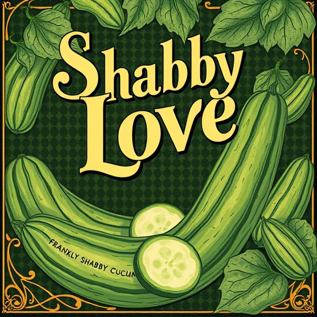

Frankly Shabby Cucumbers
The Frankly Shabby Cucumbers are a band that plays music revolving around the themes of shabby love, loss, and frankly, cucumbers. Their music has often been described as frankly shabby, but is loved by cucumber enthusiasts everywhere.
History of Frankly Shabby Cucumbers
The band was formed in 2010 by a group of friends who shared a passion for cucumbers and music. Over the years, they have released several albums and performed at numerous venues, gaining a dedicated following of fans who appreciate their unique sound and quirky themes.
Shabby Band Description
Frankly Shabby Cucumbers' music is characterized by its eclectic mix of genres, including rock, folk, and indie. Their lyrics often explore themes of love, loss, and the simple joys of life, all with a touch of humour and a nod to their favourite vegetable, the cucumber.
Frankly Cucumber Discography

Shabby Love (2011)
- Track 1: Shabby Love
- Track 2: Cucumber Heart
- Track 3: Green Dreams
- Track 4: Shabby Nights
- Track 5: Cucumber Blues

Cucumber Dreams (2013)
- Track 1: Dreamy Cucumber
- Track 2: Shabby Morning
- Track 3: Green Fields
- Track 4: Cucumber Love
- Track 5: Shabby Dreams
Frankly Shabby (2016)
- Track 1: Frankly Shabby
- Track 2: Cucumber Nights
- Track 3: Shabby Love Song
- Track 4: Green Melancholy
- Track 5: Cucumber Serenade

Green Melodies (2019)
- Track 1: Green Melodies
- Track 2: Shabby Tunes
- Track 3: Cucumber Harmony
- Track 4: Shabby Symphony
- Track 5: Cucumber Ballad